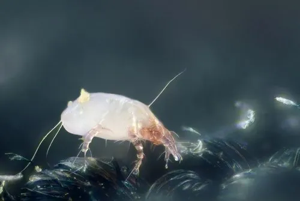

蛛形动物 · 动物界
屋尘螨 Dermatophagoides pteronyssinus

生活在床垫、沙发和地毯灰尘中的微小螨类，以人体皮屑为食，其排泄物是常见的过敏原，可诱发鼻炎和哮喘。
- 分类
- 门节肢动物门纲蛛形纲目绒螨目科尘螨科属尘螨属
- 栖息环境
- 床垫、枕头、沙发、地毯、毛绒玩具等积尘的室内织物中
- 地理分布
- 全球分布，室内环境普遍存在
- 保护级别
- IUCN 暂无评估；室内常见螨类，无保护级别
物种志
屋尘螨体长仅 0.2–0.3 毫米，身体呈椭圆形，乳白色半透明，有四对短足，肉眼难以看清。它以人体脱落的皮屑、真菌孢子和灰尘中的有机物为食，喜欢温暖潮湿的环境，最适宜的温度为 20–25℃、相对湿度 70%–80%，因此在床垫、枕头、沙发、地毯和毛绒玩具中大量繁殖。
屋尘螨呈世界性分布，是室内最常见的过敏原来源之一。它不叮咬人，也不传播疾病，但其排泄物和尸体碎片被吸入后，可能引起过敏性鼻炎、哮喘、湿疹等疾病。雌螨一生可产卵 25–50 枚，从卵到成虫约需 2–4 周。防治的关键是降低室内湿度、勤洗勤晒床上用品、使用防螨床罩并减少织物堆积；过敏人群应遵医嘱进行环境控制或脱敏治疗。
形态与习性
- 食性人体皮屑、真菌孢子和灰尘中的有机物
- 体长0.2–0.3 mm
- 寿命成虫约 1–2 个月
- 繁殖雌螨一生可产卵 25–50 枚，卵到成虫约 2–4 周
- 活动节律喜温暖潮湿，20–25℃、湿度 70%–80% 时最活跃
- 危害排泄物和尸体是常见过敏原，可诱发鼻炎和哮喘
趣味知识
- 屋尘螨不咬人，但它排泄物中的蛋白质是常见的室内过敏原。
- 它喜欢潮湿环境，把室内湿度控制在 50% 以下可明显抑制其繁殖。
- 勤洗勤晒床上用品、使用防螨床罩，是减少尘螨接触的有效方法。